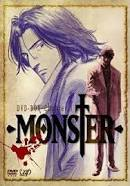

Monster
Monster Monster is a famous manga by Naoki Urasawa and an anime based on it in the genre of a psychological thriller with detective elements. As of December 2009, the manga had the highest user rating in the Anime News Network database.
1. Praktiskais Darbs
Monster Monster is a famous manga by Naoki Urasawa and an anime based on it in the genre of a psychological thriller with detective elements. As of December 2009, the manga had the highest user rating in the Anime News Network database.